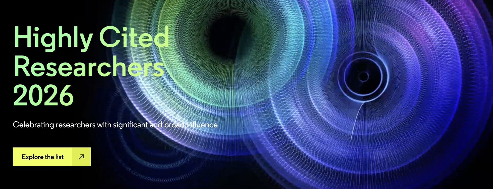

2026 Top 1% Highest Cited Scientists Announced

November 18, 2026 — For the second year in a row, I am honored to be named one of Clarivate’s Highly Cited Researchers in the “Space Science” field, a recognition of scholars whose publications rank among the top 1% by citations in their discipline over the past decade. By my count, I am one of 69 researchers recognized in Space Science this year, and one of 10 Highly Cited Researchers from UMass Amherst — the only one in Space Science.
This recognition reflects the work of an incredible community of collaborators, students, and postdocs. From the JWST UNCOVER survey to our ongoing studies of how the most massive galaxies form and quench, it has been a privilege to share in so many discoveries with such a talented and generous group of people.
More about the list: Clarivate Highly Cited Researchers 2026
Previous year: 2025 Top 1% Highest Cited Scientists Announced
How are the most highly cited researchers identified? The Clarivate webpage describes the process: “Highly Cited Researchers demonstrate significant and broad influence in their field(s) of research. Each researcher selected has authored multiple Highly Cited Papers which rank in the top 1% by citations for their field(s) and publication year in the Web of Science Core Collection over the past eleven years. However, citation activity is not the sole selection indicator. This list, based on citation data, is then refined using other quantitative metrics, as well as qualitative analysis and expert judgment.”